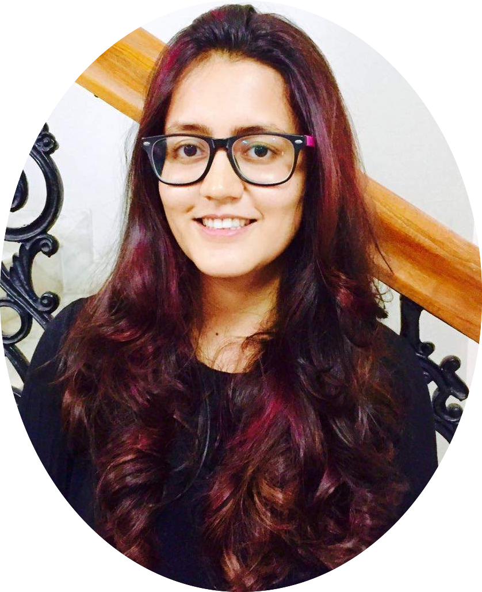

|
Aditi Mavalankar
I am a graduate student in the Computer Science department at UC San Diego
advised by Prof. Sicun Gao.
I completed my undergrad at the International Institute of
Information Technology, Hyderabad (IIIT-H) in August 2016.
I spent two summers (SDE, 2017 and Applied Scientist, 2018) interning at Amazon Lab126 in the Computer Vision team.
I am currently co-organizing ExploreCSR@UCSD,
a Google-funded workshop for promoting Computer Science research among women.
During my Master's at UC San Diego, I was the graduate student mentor of the
Early Research Scholars Program (ERSP),
led by Prof. Christine Alvarado, aimed at promoting research among
undergraduate students, especially students from communities underrepresented in Computer Science.
Other than my work, I love singing (check out my
YouTube channel!),
dancing and reading.
Email /
CV /
Github /
Google Scholar /
LinkedIn
|

|
|
Research
I am primarily interested in devising sample-efficient algorithms for learning transferrable representations
for skills and tasks in continuous environments using Deep Reinforcement Learning.
During my undergrad, I worked on projects in Cognitive Science, Programming Languages, and Online Education.
|
Eye tracking in naturalistic badminton play: comparing visual gaze pattern strategy in world-rank and amateur player
Nithiya Shree Uppara, Aditi Mavalankar, Kavita Vemuri
PETMEI, 2018
|
How Does a Program Run? A Visual Model Based on Annotating Abstract Syntax Trees
Venkatesh Choppella, Garima Ahuja, Aditi Mavalankar
LaTICE, 2016
|
Generation of Quizzes and Solutions Based on Ontologies -- A Case for a Music Problem Generator
Aditi Mavalankar, Tejaswinee Kelkar, Venkatesh Choppella
T4E, 2015
|
Decoding (un) Known Opponent's Game Play, a Real-Life Badminton Eye Tracking Study.
Aditi Mavalankar, Snigdha Dagar, Kavita Vemuri
EAPCogSci, 2015
|
|
Co-organizer, ExploreCSR@UCSD, 2019-20
|
|
Group Mentor, Early Research Scholars Program, 2018-19
Graduate Student Mentor, Early Research Scholars Program, 2017-18
Graduate Student Mentor, Early Research Scholars Program, 2016-17
|
|
|
Graduate Teaching Assistant, CSE291: Topics in Search and Reasoning, Spring 2019
Graduate Teaching Assistant, CSE190: Introduction to CS Research, Fall 2017
Graduate Teaching Assistant, CSE191: Research Methods in CS, Fall 2016
|
|
|
Teaching Assistant, CSE371: Artificial Intelligence, Spring 2016
Teaching Assistant, IMA201: Mathematics III, Monsoon 2015
Teaching Assistant, IMA102: Mathematics II, Spring 2015
Teaching Assistant, IMA201: Mathematics III, Monsoon 2014
Teaching Volunteer, Ashakiran, 2013-2016
|
|
Awards
|
|
Master's Award for Excellence in Leadership/Service, UC San Diego, 2018
Research Award, IIIT-H, 2015
Dean's Academic Award, IIIT-H, 2012-2016
|
Website template from here
|
|
{kind=link}